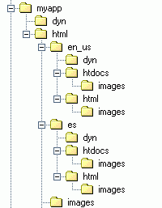

Contents:
You've probably read the articles and books about how to internationalize a web application. You're prepared to replace all HTML text with program calls and move that text into resource files. Before you go to all that trouble, you owe it to yourself to consider Dynamator.
If you've read the 20-Minute Guide, you know you can use Dynamator to internationalize server pages without replacing all text with program calls. You know you can instead leave the text in the HTML and put the program calls in a separate file. That's already a better way to internationalize server pages than the usual approach. This guide doesn't tell you how to do that, because you already know how to do that.
Instead, this guide goes much further, presenting a radical approach possible only with Dynamator. This approach may be too radical for some. You won't find this approach documented anywhere else, because no other technology can internationalize in quite the same way. So please remember that you can still reap benefits from internationalizing with Dynamator even if you just use it to improve the traditional approach.
Dynamator offers a radical approach to internationalizing and localizing static content. If you use this approach, you will reduce the complexity of your internationalized application's presentation layer. Your project's programmers, HTML authors, and localizers will work more efficiently and effectively. And your application will be more efficient and more maintainable.
Here's how the Dynamator internationalization process works:
The result is a web site for each locale.
I can already hear the gasps.
I told you this approach is radical.
But before you stop reading, consider the benefits:
Dynamator is only one part of the internationalizer's toolset. Application messages still need to be placed in resource files, and programmers still need to write locale-aware code. But Dynamator can provide a tremendous productivity boost to any internationalization project.
Here are the internationalization tasks Dynamator can help with:
Examples in this article are excessively simple so that they can be easily understood. The locale used is a dialect of Pig Latin, a simple artificial language based on English. A nice thing about Pig Latin is that it uses the ASCII character set. (We'll deal with other character sets in the advanced guide.) A basic understanding of Dynamator is assumed (see the 20-Minute Guide).
Before starting an internationalization project, it's important to work out an appropriate directory structure. Here's an example of a directory structure for working with Dynamator.

Here's what each directory contains:
myapp
+-dyn Dynamator server code files, owned by programmers
|
+-html Default HTML files and static demo site,
| owned by HTML authors
+-images Images for static demo site
|
+-en_us Localized version of static demo site
| | for default locale, owned by central localization team
| +-dyn Dynamator localization files for default locale
| |
| +-html HTML files for locale en_us, generated by Dynamator
| | |
| | +-images Images for default locale,
| | copied from /myapp/html/images
| +-htdocs Server pages for locale en_us, generated by Dynamator
| |
| +-images Images for default locale,
| copied from /myapp/html/images
|
+-xx_xx Localized version of static demo site
| for locale xx_xx, owned by locale xx_xx team
+-dyn Dynamator localization files for locale xx_xx
|
+-html Localized HTML files, generated by Dynamator
| |
| +-images Images for locale xx_xx, owned by locale xx_xx team
|
+-htdocs Server pages for locale xx_xx, generated by Dynamator
|
+-images Images for locale xx_xx,
copied from /myapp/xx_xx/html/images
With this structure, the document root for the original static demonstration site is in the myapp/html directory, the document root for each localized static demonstration site is in the myapp/html/locale/html directory, and the document root for each localized server page site is in the myapp/html/locale/htdocs directory.
This structure separates hand-written files from generated files. This makes it easy to clean out generated files without accidentally deleting hand-written files.
This structure also simplifies deployment, because each html and htdocs directory tree contains only deployable files.
A large application will have multiple directories, one for each area of the site. The html and dyn directories should have a parallel structure for all locales, so that files in html/es/html/admin correspond to files in html/es/dyn/admin as well as html/en_us/html/admin.
The locale-specific dyn directories are only needed if localizers use Dynamator to specify text strings rather than completely redesigning HTML.
We'll start with a Hello World example.
<html> <head> <title>A Simple Page</title> </head> <body> <p>Hello, World! </body> </html>
Most web applications contain static text. Static text is text that is hard-coded on an HTML page. In an internationalized application, this text should appear in the language of the user.
Before Dynamator, the best way to make this happen was to replace the text with a program call that would access a resource file containing translated text. This was inefficient, and made server pages harder to maintain.
You can use Dynamator to replace text with program calls. But there's a much better way to internationalize static text with Dynamator.
Dynamator can create localized versions of static HTML pages. Localizers translate text in a Dynamator file; Dynamator replaces the original text with the translated text. This makes things easier for localizers, who can validate their translations without having to deploy them to a web server. It also reduces programmer effort, since programmers don't have to code text access calls.
Here's how to use Dynamator to localize static text:
<html> <head> <title>A Simple Page</title> </head> <body> <p id="HelloText">Hello, world! </body> </html>
<dynamator language="none" suffix="html">
<tag tag="title">
<content>
A Simple Page
</content>
</tag>
<id name="HelloText">
<content>
Hello, world!
</content>
</id>
</dynamator>
<dynamator language="none" suffix="html">
<tag tag="title">
<content>
An Implesay Agepay
</content>
</tag>
<id name="HelloText">
<content>
Elohay, Orldway!
</content>
</id>
</dynamator>
<!-- generated by Dynamator Fri Dec 28 13:56:25 CST 2001 --><!DOCTYPE HTML PUBLIC "-//W3C//DTD HTML 4.01 Transitional//EN"> <html> <head> <title>An Implesay Agepay</title> </head> <body> <p id="HelloText"> Ellohay, Orldway! </p> </body> </html>
One of the difficulties of internationalization is that the lengths of words, phrases, and text blocks vary greatly by language. Internationalized HTML must be designed to account for the variety of possible lengths. The problem is that localization typically happens after the HTML is designed, and at any time, the next translation may produce an unexpectedly long string.
Harry Robinson and Arne Thormodsen describe a creative approach to this issue in their paper, Parlez-Vous Klingon? Testing Internationalized Software with Artificial Locales. They translate English text into artificial languages like Klingon and Swedish Chef to test user interface designs without dependence on real localizations.
To facilitate similar testing for internationalized Dynamator applications, the Dynamator examples directory includes an XSL script that translates content elements within Dynamator files to Pig Latin. This tool provides HTML authors with an easy way to check that all text has been internationalized, and that formatting passes a simple sanity test.
For example, to automatically translate the English Dynamator HelloWorld file to Pig Latin with Saxon, assuming that DynToPigLatin.xsl is in the en_us_pig directory:
Then to create the Pig Latin file:
The Dynamator Pig Latin translator only illustrates one kind of testing that can be done before localization. Robinson and Thormodsen describe a more comprehensive set of testing strategies.
As with static text, the goal for media file references is to resolve them in the HTML rather than at runtime. It is not enough to localize the name of the file; other attributes such as image height and width may also change between locales. Dynamator can do this easily.
If each locale uses the same directory structure and file names, the media source filename does not need to change at all. Place media files in a subdirectory of the locale-specific directory, and make all media references relative.
In the following example, we replace the static text of the HelloWorld example with an image.
The default image looks like this:
The Pig Latin image looks like this:
The image file names are the same, and they are in the same location in the directory tree relative to the HTML file. But as is often the case, the image sizes are different.
The original HTML page is coded to reference the default image:
<html> <head> <title>An Image Page</title> </head> <body> <img id="HelloImage" src="../images/hello.png" width="207" height="56" alt="Hello, World!"> </body> </html>
The locale-specific Dynamator file corrects the image width and changes the alt text.
<dynamator language="none" suffix="html">
<tag tag="title">
<content>An Imageway Agepay</content>
</tag>
<id name="HelloImage">
<attr name="width">
<content>297</content>
</attr>
<attr name="height">
<content>56</content>
</attr>
<attr name="alt">
<content>Ellohay, Orldway!</content>
</attr>
</id>
</dynamator>
After processing with Dynamator, the localized page looks like this:
<!-- generated by Dynamator Fri Dec 28 18:48:55 CST 2001 --><!DOCTYPE HTML PUBLIC "-//W3C//DTD HTML 4.01 Transitional//EN"> <html> <head> <title>An Imageway Agepay</title> </head> <body> <img width="297" height="56" id="HelloImage" src="../images/hello.png"> </body> </html>
Using Dynamator, we have changed just the parts of the original pages that needed to be localized. We have created static demonstration pages in the local language. And we have done all this without the need to involve programmers. Localizers and programmers can work concurrently: localizers on localized static demonstration sites; programmers on server code for the server pages.
Before Dynamator, duplication of server page code across locales was a fact of life for most internationalized applications. The way many resolved this issue was to replace text with program calls, so that a single server page template could serve up any language. But this didn't always work, because UI designs sometimes change for different locales. And it was always ugly.
With Dynamator, it is never necessary to duplicate server page code across locales.
The following example shows how a single Dynamator file can be applied to HTML files for multiple locales. The Hello World example is enhanced to display the user's name, which is assumed to reside in a session variable.
Although this example uses JSP, Dynamator can work just as well with any page generation language.
Here's the default HTML page:
<!DOCTYPE HTML PUBLIC "-//W3C//DTD HTML 4.01 Transitional//EN"> <html> <head> <title>User Greeting</title> </head> <body> <p id="HelloText">Hello, <span id="UserName">User</span>!</p> </body> </html>
"User" is surrounded with a <span> tag
so that it can be referenced by Dynamator.
The default Dynamator file looks like this:
<dynamator language="none" suffix="html">
<tag tag="title">
<content>
User Greeting
</content>
</tag>
<id name="HelloText">
<content>
Hello, <span id="UserName">User</span>!
</content>
</id>
</dynamator>
The whole paragraph is specified here, rather than fragments. The <span> tag is also here, as is the exclamation point. This is because the order of these may change depending on the language. Translations should always be applied to entire sentences, not sentence fragments.
If we were using resource files, the resource file entry for the HelloText id might look like this:
HelloText: Hello, {0}!
The {0} would be replaced at run-time through a call to java.text.MessageFormat.format(). While the resource format entry is more concise, the Dynamator entry is more self-explanatory. The Dynamator way is also more efficient, since it eliminates the run-time call to MessageFormat.
Here's the Pig Latin version of the Dynamator file:
<dynamator language="none" suffix="html">
<tag tag="title">
<content>
Userway Eetinggray
</content>
</tag>
<id name="HelloText">
<content>
Ellohay, <span id="UserName">Userway</span>!
</content>
</id>
</dynamator>
After processing with Dynamator, the localized Pig Latin page looks like this:
<!-- generated by Dynamator Fri Dec 28 22:24:02 CST 2001 --><!DOCTYPE HTML PUBLIC "-//W3C//DTD HTML 4.01 Transitional//EN"> <html> <head> <title>Userway Eetinggray</title> </head> <body> <p id="HelloText"> Ellohay, <span id="UserName">Userway</span>! </p> </body> </html>
Now that we have a localized static page, we need to transform it into a server page.
The Dynamator file for this page replaces the content of
the element with id="UserName" with the user's
name from the session. It is placed in a directory tree
rooted at "dyn", a sibling of the html directory.
<dynamator language="jsp">
<id name="UserName">
<content>
session.getValue("username")
</content>
</id>
</dynamator>
This file is applied to the Pig Latin HTML with the following command:
The result is:
<%-- generated by Dynamator Fri Dec 28 23:05:50 CST 2001 --%><!-- generated by Dynamator Fri Dec 28 22:24:02 CST 2001 --> <!DOCTYPE HTML PUBLIC "-//W3C//DTD HTML 4.01 Transitional//EN"> <html> <head> <title>Userway Eetinggray</title> </head> <body> <p id="HelloText">Ellohay, <span id="UserName"><%= session.getValue("username") %></span>!</p> </body> </html>
Note the two Dynamator generation stamps, one for the HTML translation, the other for the server code. Each could be removed by using the -G flag when invoking dynamate. The FAQ shows how to remove id attributes and span tags from generated files.
The same Dynamator file can be applied to any localized version of the same HTML file to create a localized server page.
Often, localization requires changes to HTML. Without Dynamator, the same server code must be duplicated across each locale. No matter how you try to insulate server pages from changes to program logic, server code is likely to change. Without Dynamator, the effort required to change server page program logic could be multipled by the number of locales. With Dynamator, the effort for 100 locales is the same as the effort for one locale.
There are at least three reasons Dynamator works so well for internationalization.
First, Dynamator divides things into appropriate modules. A site internationalized with Dynamator has three kinds of presentation sources: HTML, Dynamator translation files, and Dynamator server code files. There is no duplication between the files. This reduces overall development and maintenance workload. It also reduces sequence dependencies between team members. While localizers are still dependent on HTML authors, all other dependencies are improved: Programmers and HTML authors are much more independent, and programmers and localizers are completely independent.
Second, Dynamator allows static text to be internationalized without making it dynamic. The ability to maintain localized static demonstration sites empowers HTML authors and localizers. Dynamator makes it easy for HTML authors and localizers to test their work without involving programmers. Not replacing text with program calls benefits everyone.
Finally, Dynamator moves as much internationalization processing as possible from the runtime environment to the development environment. This improves application efficiency and testability.
Most advice about internationalizing web applications is technically primitive and limited in scope. Written from a programmer's perspective, articles on internationalization rarely consider the perspectives of authors and localizers. They often concentrate on new technology, describing how to code but ignoring larger issues such as process and configuration.
Success in the real world requires optimization of the entire process, not just the parts that programmers see. It requires selection of the most effective technologies, not the coolest technologies. And it requires careful organization and planning, from system architecture to software configuration to development process.
Dynamator originated not from a desire to invent something cool, but from a desire to solve real problems in the development of web applications. Dynamator is effective as an internationalization and localization tool because it helps to optimize processes for authors, localizers, and programmers, and for teams as a whole.
The process described in this guide can make an internationalization project easier for authors, localizers, and programmers. By reducing dependencies and increasing individual autonomy, Dynamator can shorten the development and maintenance cycles of internationalized applications. And the resulting architecture is more efficient and maintainable.
Give Dynamator a try for your next internationalization project. You'll be glad you did.
Next: Advanced Internationalization: Working with Character Sets